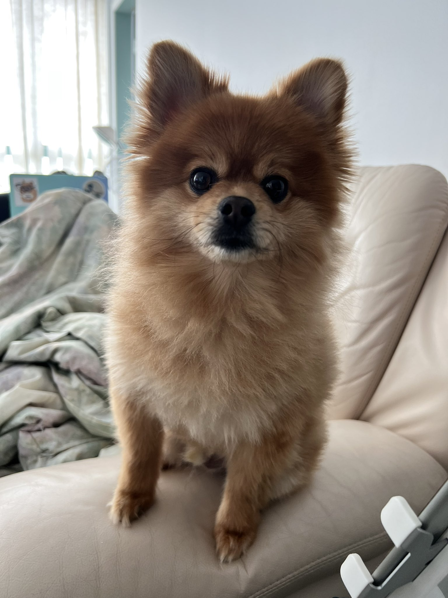

I was born in Macau, China but I was raised in
Canada for a large majority of my life. After high school, I
attended the University of the Fraser Valley for health science but
I decided to take a break from school because I did not want to
pursue the field anymore. During my break, I developed a strong love
for traveling. I was fortunate to have the time and opportunity to
travel to many cities around the world but there are still a lot of
places I want to visit.
So far, I have traveled to 16 cities:
- Calgary, Canada
- Toronto, Canada
- Seattle, Washington
- Portland, Oregon
- Los Angeles, California
- San Francisco, California
- Miami, Florida
- Chicago, Illinois
- Boston, Massachusetts
- Honolulu, Hawaii
- Cancun, Mexico
- Macau, China
- Hong Kong, China
- Taipei, Taiwan
- Singapore, Republic of Singapore
- Seoul, South Korea
- Jakarta, Indonesia
- Paris, France
- Utretcht, Netherlands

My interest in the Computer Information Field stemmed from the
pandemic. During the total lockdown, nobody was able to work unless
your career allowed you to “work from home”. Information System
Technicians were the specialists that helped allow people to work
during the full lockdown and I began to wonder about how everything
worked and how it was possible for people to work from their
personal computers.